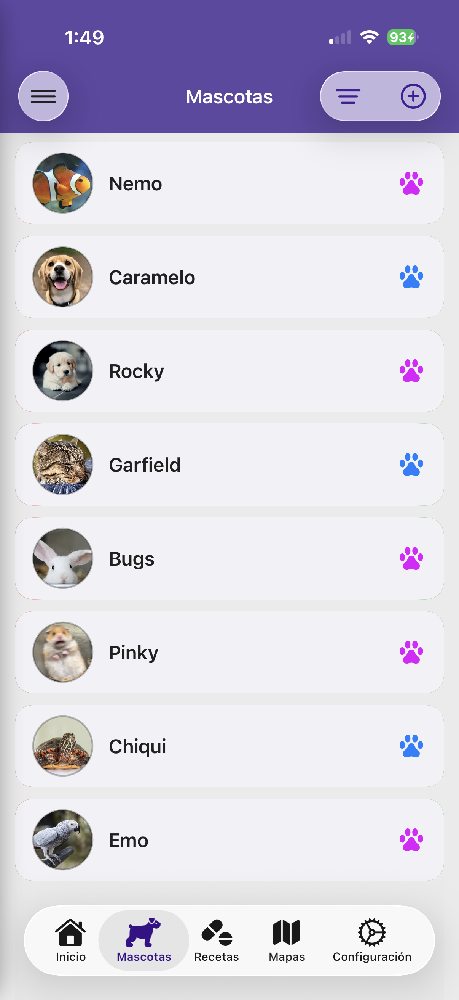
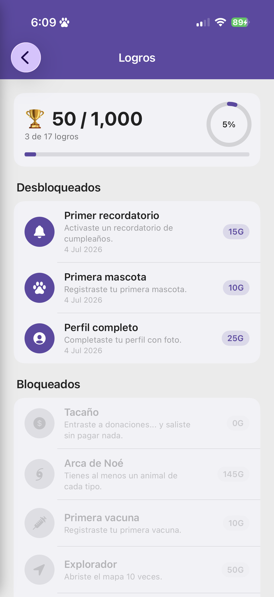
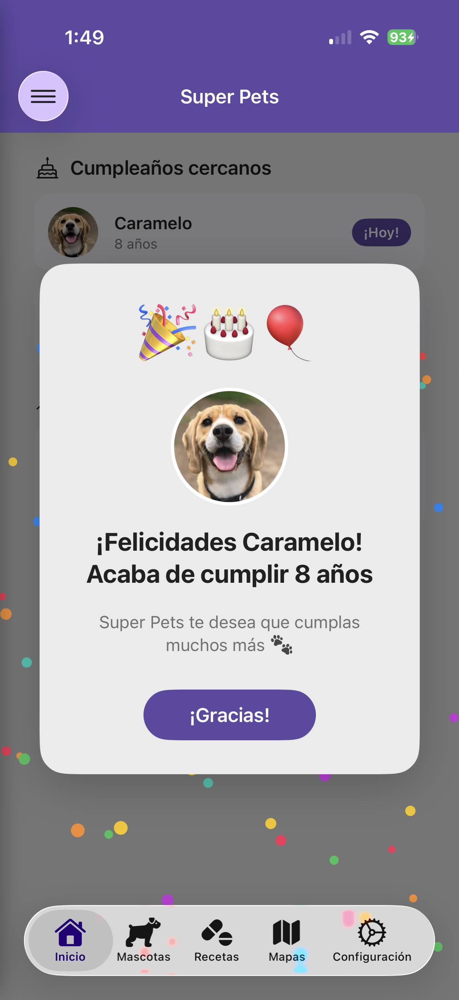
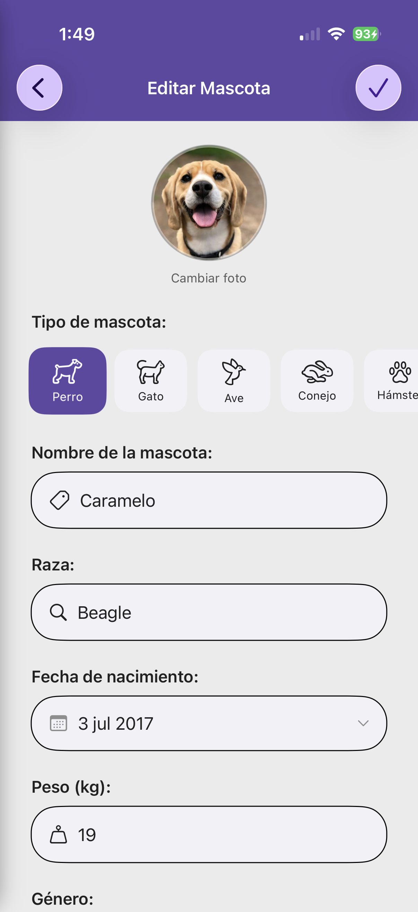
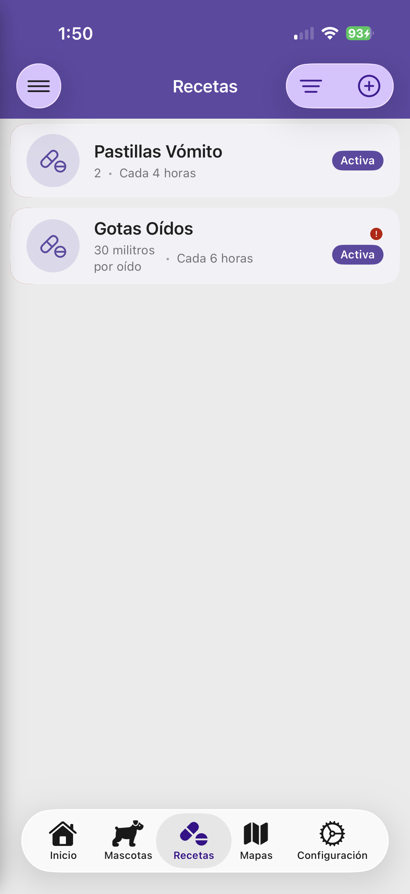
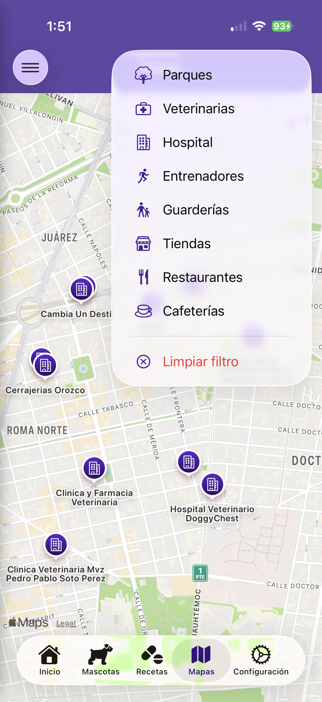
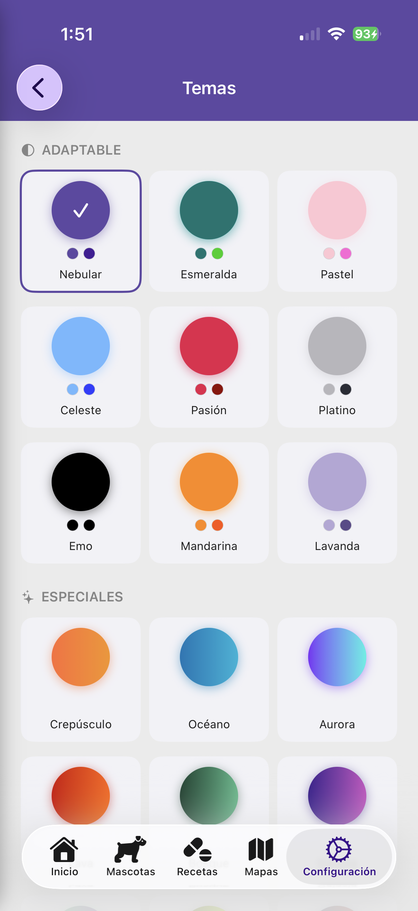
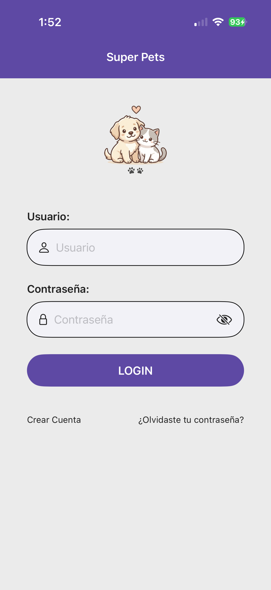
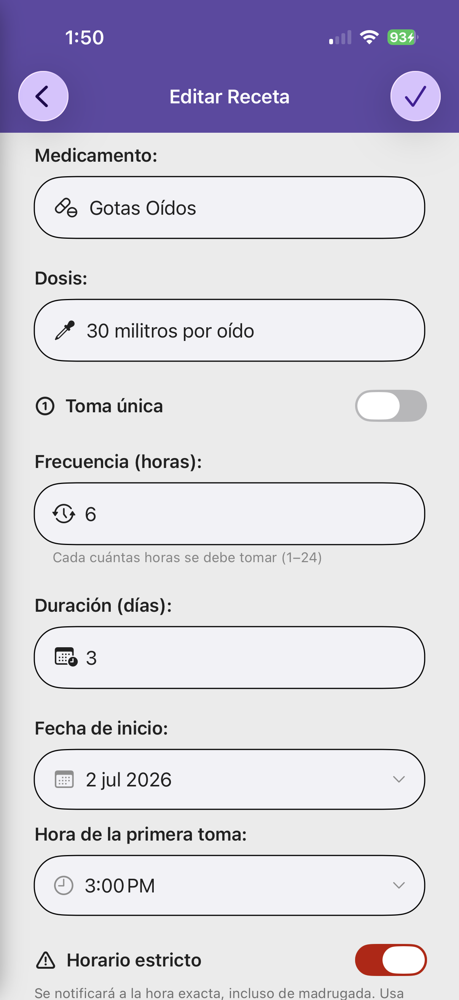
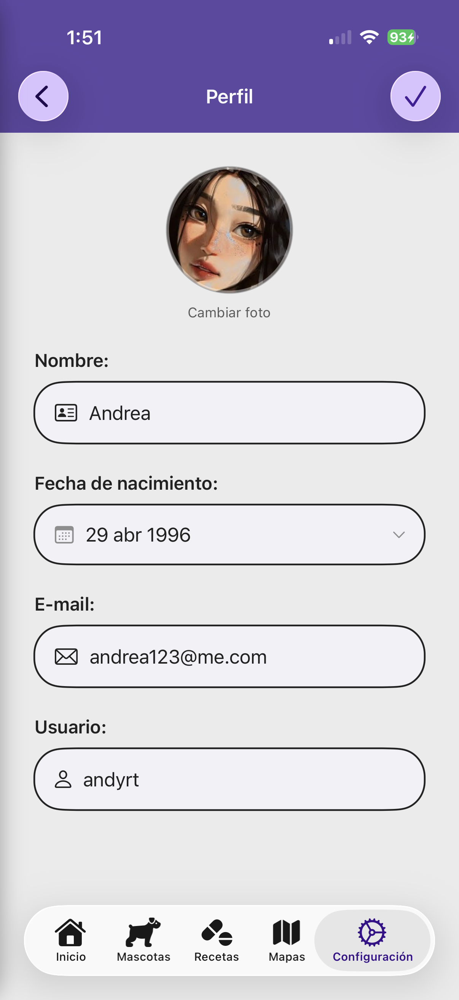

Perfiles completos
Registra nombre, raza, peso, fecha de nacimiento, foto y documento RUAC de cada mascota. Soporta perros, gatos, aves, conejos, hámsters, peces, tortugas y más, con más de 50 razas.
Vacunas, recetas, cumpleaños, veterinarias cercanas y mucho más. Super Pets te ayuda a ser el mejor dueño para tus compañeros peludos.



Gestiona la salud y bienestar de todas tus mascotas desde una sola app.
Registra nombre, raza, peso, fecha de nacimiento, foto y documento RUAC de cada mascota. Soporta perros, gatos, aves, conejos, hámsters, peces, tortugas y más, con más de 50 razas.
Lleva el registro de vacunas y desparasitaciones con fotos, firma del veterinario y recordatorios automáticos para la próxima cita.
Controla medicamentos con dosis, frecuencia y duración. Recibe notificaciones puntuales para no olvidar ninguna toma.
Encuentra veterinarias, parques, tiendas de mascotas, guarderías y cafeterías pet-friendly cerca de ti.
Nunca olvides el cumpleaños de tu mascota. Celebra con animaciones especiales y recibe recordatorios anticipados.
Registra paseos con GPS en tiempo real o de forma manual. Ve la ruta en el mapa, duración y distancia recorrida. Mantén tu racha de días seguidos, revisa tu semana con gráficas de duración y distancia, y descubre la intensidad de cada paseo. Comparte una imagen diseñada de tu paseo en redes sociales.
Tu paseo sigue activo aunque cierres la app. Visualiza el tiempo y la distancia en tiempo real desde la Dynamic Island o la pantalla de bloqueo.
Genera un pasaporte digital con toda la información de tu mascota: datos, historial de vacunas, desparasitaciones y RUAC. Listo para compartir con tu veterinario.
Premia el buen comportamiento al instante. Click + premio = aprendizaje rápido, con varios sonidos para elegir.
Calcula la edad de tu mascota en años humanos según su especie, raza o tamaño y peso, con su esperanza de vida. Nada de multiplicar por 7.
Revive la historia de cada mascota: su nacimiento, cumpleaños, vacunas, desparasitaciones, su primer paseo y el más largo.
Tarjetas listas para tus historias: cumpleaños, primer paseo, kilómetros acumulados, aniversarios juntos y vacunas al día. Elige entre diseños elegante, con foto o colorido.
Disponible en iPhone, iPad y Mac. Con widgets de Mis Mascotas y de Paseos, acceso desde el Centro de control y la pantalla bloqueada, companion para Apple Watch y widgets visibles desde CarPlay — tus mascotas siempre al alcance.
Desbloquea 22 logros mientras cuidas a tu mascota. Registra vacunas, celebra cumpleaños, explora el mapa, completa paseos y más. ¿Puedes llegar a los 1,000 puntos?
Desliza y descubre cómo se ve Super Pets en tu día a día.




Agrega tantas mascotas como necesites. Cada una tiene su propio perfil con fotos, cartilla de vacunación y toda su información independiente.
Tipo, raza, fecha de nacimiento, peso y foto. Todo lo importante de cada compañero en un solo perfil.
Registra medicamentos con su dosis, frecuencia y duración. El modo estricto te avisa incluso de madrugada.
Parques, veterinarias, hospitales, entrenadores, guarderías, tiendas, restaurantes y cafeterías cerca de ti.
37 temas personalizables: adaptables, claros, oscuros y especiales con degradados. Del clásico Nebular a Aurora, Océano o Galaxia.
Desbloquea 22 logros mientras cuidas a tu mascota y suma puntos hasta llegar a los 1,000.
Una interfaz intuitiva con 37 temas personalizables y soporte para modo claro y oscuro.



Disponible para iPhone y iPad. Compatible con Apple Watch, Widget y sincronización automática con iCloud.
Descárgala en elApp Store